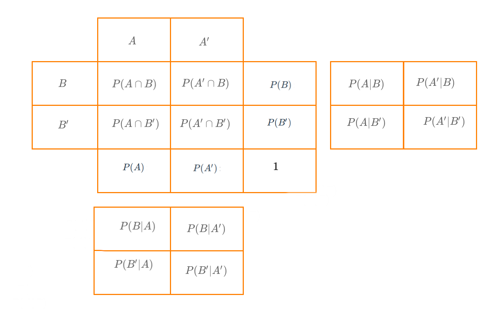

PRESENTACIÓN

El presente tutorial contiene preguntas relacionadas con la construcción y análisis de las distribuciones de frecuencia a través de tablas, conceptos importantes en el análisis decriptivo de datos
CONCEPTOS
VARIABLES CUALITATIVAS
El resumen de datos para variables cualitativs se centra en la construcción de tablas de frecuencia. Dependiendo si la variable es medida en escala nominal u ordinal la tabla presenta o no las frecuencias acumuladas
FRECUENCIA ABSOLUTA
\(f_{i}\) : frecuencia absoluta que consiste en el conteo para cada uno de los valores distintos que toma la variable. La suma total de frecuencias absolutas debe ser igual al total de datos. \(\sum_{i=1}^{n} f_{i} = n\)
FRECUENCIA RELATIVA
\(h_{i}\) : la frecuencia relativa corresponde al porcentaje de cada nivel que se obtiene al dividir \(h_{i}/n \times 100\%\) . La suma total de frecuencias relativas debe ser igual a uno. \(\sum_{i=1}^{n} h_{i} = 1.00\)
FRECUENCIA ABSOLUTA ACUMULADA
\(F_{i}\) : la frecuencia absoluta acumulada se obtiene al sumar las frecuencias absolutas de niveles menores o iguales al nivel correspondiente. \(F_{j} = \sum_{i=1}^{j} f_{i}\). \(F_{1} = f_{1}\), \(F_{2} = f_{1}+ f_{2}\), \(F_{3} = f_{1}+ f_{2} +f_{3}\), ….., \(F_{n} = f_{1}+ f_{2}....+f_{m} = n\). Siendo \(m\) el número de niveles o valores diferentes que tiene la variable.
FRECUENCIA RELATIVA ACUMULADA
\(H_{i}\) : la frecuencia relativa acumulada que corresponde al porcentaje acumulado hasta el nivel correspondiente. \(H_{j} = \sum_{i=1}^{j} h_{i}\). \(H_{1} = h_{1}\), \(H_{2} = h_{1}+ h_{2}\), \(H_{3} = h_{1}+ h_{2} + h_{3}\), ….., \(H_{m} = h_{1}+ h_{2}....+ h_{m} = 1.00\). Siendo \(m\) el número de niveles o valores diferentes que tiene la variable.
VARIABLES CUANTITATIVAS
En el caso de variables cuantitativas la construcción de tablas requiere la recodificación de la variable en intervalos con las siguientes columnas
| i | límite inferior | límite superior | marca de clase | frecuencia absoluta | frecuencia relativa | frecuencia absoluta acumulada | frecuencia relativa acumulada |
|---|---|---|---|---|---|---|---|
| \(1\) | \(L_{0}\) | \(L_{1}\) | \(x_{1}^{'}\) | \(f_{1}\) | \(h_{1}\) | \(F_{1}\) | \(H_{1}\) |
| \(2\) | \(L_{1}\) | \(L_{2}\) | \(x_{2}^{'}\) | \(f_{2}\) | \(h_{2}\) | \(F_{2}\) | \(H_{2}\) |
| \(3\) | \(L_{2}\) | \(L_{3}\) | \(x_{3}^{'}\) | \(f_{3}\) | \(h_{3}\) | \(F_{3}\) | \(H_{3}\) |
| \(4\) | \(L_{3}\) | \(L_{4}\) | \(x_{4}^{'}\) | \(f_{4}\) | \(h_{4}\) | \(F_{4}\) | \(H_{4}\) |
| \(i\) | \(L_{i-1}\) | \(L_{i}\) | \(x_{i}^{'}\) | \(f_{i}\) | \(h_{i}\) | \(F_{i}\) | \(H_{i}\) |
| \(m\) | \(L_{m-1}\) | \(L_{m}\) | \(x_{m}^{'}\) | \(f_{m}\) | \(h_{m}\) | \(n\) | \(1.00\) |
TABLAS DE DOBLE ENTRADA, TABLAS CRUZADAS o TABLAS DE CONTINGENCIA
Estas tabla son de utilidad cuando se requiere el analisis bivariado de dos variables cualitativas. Se denominan tambien tablas de doble entrada debido a las columnas representan los niveles de una variable, mientras que las filas representan los niveles de la segunda variable.
MAPA

CUESTIONARIO
Pregunta 1
Pregunta 2Untitled
la siguiente tabla resume los datos recogidos en una encuesta sobre calidad de vida. El estudio recogió información de 900 personas sobre:
\(A\) : realiza actividad de portiva \(B\) : se alimenta de manera saludable

Pregunta 3
La siguiente información corresponde a la distribución de los atletas que participaron en la carrera 10K La Luz en Cali en el 2022.
Categoría | Frecuencia absoluta |
|---|---|
1. Juvenil | 19 |
2. Abierta | 1,179 |
3. Veteranos A | 423 |
4. Veteranos B | 227 |
5. Veteranos C | 74 |
Pregunta 4
Pregunta 5
PROBLEMAS
Problema 1
El paquete paqueteMET contiene información de los tiempo obtenidos por 1922 atletas que participaron en la carrera de La Luz en 2022 en Cali.
- sex : sexo del atleta : Hombre, Mujer
- edad: edad en años del atleta
- origen: Ciudad de origen
- timerum: tiempo de carrera en segundos
- categoría: 1. Juvenil, 2. Abierta, 3. Veteranos A, 4. Veteranos B, 5. Veteranos C
- nacionalidad: nacionalidad del atleta
Construya una tabla que permita el análisis de la variable categoria por sexo
library(paqueteMETODOS)
data("CarreraLuz22")library(paqueteMETODOS)
data("CarreraLuz22")
table()library(paqueteMETODOS)
data("CarreraLuz22")
table(CarreraLuz22$categoria, CarreraLuz22$sex)**Problema 2*
El paquete paqueteMET contiene información de los tiempo obtenidos por 1922 atletas que participaron en la carrera de La Luz en 2022 en Cali.
- sex : sexo del atleta : Hombre, Mujer
- edad: edad en años del atleta
- origen: Ciudad de origen
- timerum: tiempo de carrera en segundos
- categoría: 1. Juvenil, 2. Abierta, 3. Veteranos A, 4. Veteranos B, 5. Veteranos C
- nacionalidad: nacionalidad del atleta
Qué porcentaje de las mujeres conforman la categoría Abierta?
library(paqueteMETODOS)
data("CarreraLuz22")library(paqueteMETODOS)
data("CarreraLuz22")
table(CarreraLuz22$categoria, CarreraLuz22$sex)library(tidyverse)
library(paqueteMETODOS)
data("CarreraLuz22")
table(CarreraLuz22$categoria, CarreraLuz22$sex) %>%
prop.table(.,2)Problema 3
El paquete paqueteMET contiene información de los tiempo obtenidos por 1922 atletas que participaron en la carrera de La Luz en 2022 en Cali.
- sex : sexo del atleta : Hombre, Mujer
- edad: edad en años del atleta
- origen: Ciudad de origen
- timerum: tiempo de carrera en segundos
- categoría: 1. Juvenil, 2. Abierta, 3. Veteranos A, 4. Veteranos B, 5. Veteranos C
- nacionalidad: nacionalidad del atleta
Las categírias estan delimidatas por rango de edades así | Categoría
| Rango de edad |
|:———–:|:———————————–| | Juvenil | menos de 18 años | | Abierta | de 18
a menos de 40 años | | Veteranos A | de 40 a menos de 50 años | |
Veteranos B | de 50 a menos de 60 años | | Veteranos C | 60 o más años
|
Verifique que las categorías cumplen estos rangos
library(paqueteMETODOS)
data("CarreraLuz22")library(paqueteMETODOS)
data("CarreraLuz22")
breaks=c(10,18,40,50,60,80) # limites de intervalos
Edad.corredores=cut(CarreraLuz22$edad, breaks)
table(Edad.corredores, CarreraLuz22$categoria)library(paqueteMETODOS)
data("CarreraLuz22")Problema 4
Ahora se requiere que construya una tabla con los tiempos en minutos por rangos de 15 minutos ( (30 a 60); [60 a 90); [90 a 120 ), [120 a 150); [150 a 180] )
library(paqueteMETODOS)
data("CarreraLuz22")library(paqueteMETODOS)
breaks=c( ) # limites de intervalos
tiempos.R=cut(CarreraLuz22$timerun/60, breaks)
table()library(paqueteMETODOS)
breaks=c(30,59.9,89.9,119.9,149.9,180 ) # limites de intervalos
tiempos.R=cut(CarreraLuz22$timerun/60 , breaks)
summarytools::freq(tiempos.R)